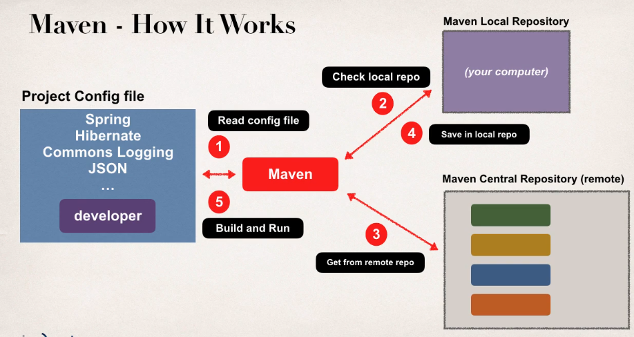

Maven is a project management tool. The most popular use of Maven is for build management and dependencies.
Behind the scenes what Maven does is:
-
Reads the configuration file of our application:
pom.xml - Checks on the local repository if the library is already stored (like a cache)
- If not, it goes to the remote repository and searches for it
- Then it saves it to the local repository
- Finally it uses the downloaded library to build and run the application

Maven also downloads the libraries' dependencies. And when you build and run your application, maven will handle the class/build path for you, based on the configuration file.